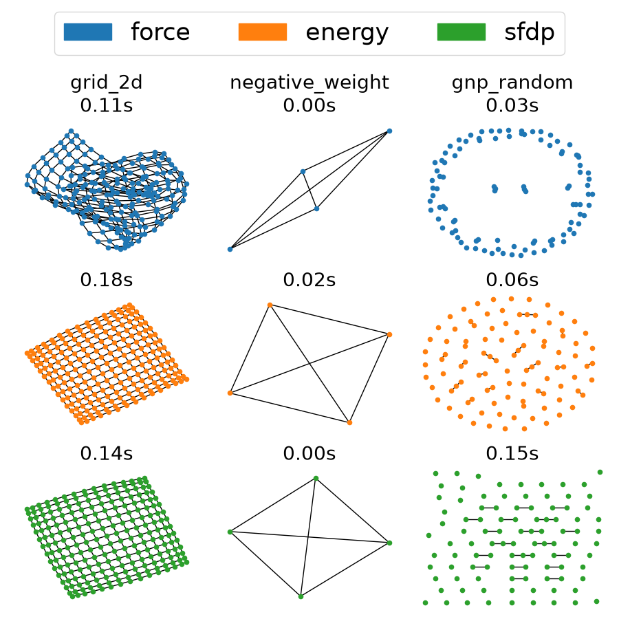

Note
Go to the end to download the full example code.
Spring Layout#
Draw graphs using the three different spring layout algorithms.
The spring layout is typically generated by the Fruchterman–Reingold force-directed algorithm. This algorithm treats edges as springs holding nodes close while treating nodes as repelling objects and simulates the system until it reaches equilibrium. The algorithm also terminates when it reaches a maximum number of iterations.
NetworkX offers mainly three different kinds of methods based on the same theoretical foundation:
nx.spring_layout(G, method="force")The default for graphs with fewer than 500 nodes in
nx.spring_layout.Direct implementation of the Fruchterman–Reingold force-directed algorithm.
Can handle negative edge weights as they are.
nx.spring_layout(G, method="energy")The default for graphs with more than or equal to 500 nodes in
nx.spring_layout.It solves an energy-based optimization problem, taking the absolute value of negative edge weights.
Uses gravitational forces acting on each connected component to prevent divergence.
nx.nx_agraph.graphviz_layout(G, prog="sfdp")Uses
sfdpfrom GraphViz to compute the layout.Employs a multilevel approach for faster force-directed graph drawing.
Requires separate installation of GraphViz. For details, see
networkx.drawing.nx_agraph

import time
import matplotlib.pyplot as plt
import matplotlib.patches as mpatches
import networkx as nx
negative_weight_graph = nx.complete_graph(4)
negative_weight_graph[0][2]["weight"] = -1
graphs = [
(nx.grid_2d_graph(15, 15), "grid_2d"),
(negative_weight_graph, "negative_weight"),
(nx.gnp_random_graph(100, 0.005, seed=0), "gnp_random"),
]
fig, axes = plt.subplots(3, 3, figsize=(9, 9))
colors = {"force": "tab:blue", "energy": "tab:orange", "sfdp": "tab:green"}
for i, (G, name) in enumerate(graphs):
results = []
t0 = time.perf_counter()
pos = nx.spring_layout(G, method="force", seed=0)
dt = time.perf_counter() - t0
results.append(("force", pos, dt))
t0 = time.perf_counter()
pos = nx.spring_layout(G, method="energy", seed=0)
dt = time.perf_counter() - t0
results.append(("energy", pos, dt))
t0 = time.perf_counter()
pos = nx.nx_agraph.graphviz_layout(G, prog="sfdp")
dt = time.perf_counter() - t0
results.append(("sfdp", pos, dt))
for j, (mname, pos, dt) in enumerate(results):
nx.draw(G, pos=pos, ax=axes[j, i], node_color=colors[mname], node_size=20)
title = (f"{name}\n" if j == 0 else "") + f"{dt:.2f}s"
axes[j, i].set_title(title, fontsize=20)
handles = [mpatches.Patch(color=color, label=key) for key, color in colors.items()]
fig.legend(handles=handles, loc="upper center", ncol=3, fontsize=25)
plt.tight_layout(rect=(0, 0, 1, 0.9))
plt.show()
Total running time of the script: (0 minutes 0.902 seconds)